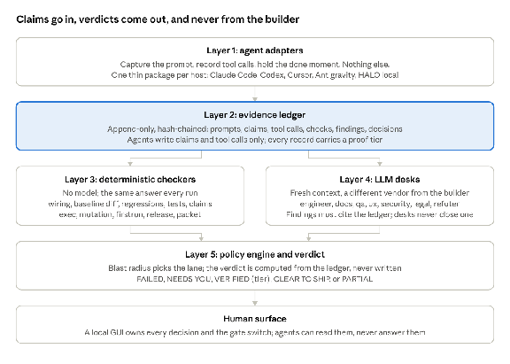

Verification for AI-driven development
The agent writes claims. Verdicts come from somewhere else.
Verdict verifies work done by AI coding agents. Claims go into an append-only evidence ledger. Verdicts are computed from that ledger by things that are not the builder: deterministic checkers, a model from a different vendor, or you.
- Rust
- Apache-2.0
- Windows, macOS, Linux
- CLI: vdt
One word, computed from the ledger
- FAILED
- A blocking finding exists: a broken wiring path, a regression, a contradicted claim, a failed command.
- NEEDS YOU
- Nothing proven wrong, but something is yours to settle: unplanned work, weakened tests, a check that could not run.
- VERIFIED (tier)
- Always suffixed with the highest proof tier reached, so a static-only pass never reads as a tested one.
- CLEAR TO SHIP
- Release lane only, with the strictest bar.
- PARTIAL
- A required checker or desk did not run. Never read as clean.
An agent that grades its own work will pass itself.
Verdict turns "the worker is not the judge" from a request in a prompt into a property of the system.
Thin adapters watch the session
Each host adapter does three things: records the prompt, records tool calls, and holds the "done" moment. Hooks for Claude Code, Codex, Cursor and Antigravity, plus an MCP server any agent can call.
Claims land in a ledger the agent cannot edit
An agent may write claims and tool calls, nothing else. An attempt to write a finding, decision or verdict is refused and recorded as a refused write.
Verdicts come from outside the builder
Ten deterministic checkers with no model in them, seven model-backed desks routed to a different vendor than the builder, and a human who owns the decisions that matter.
Five layers, one hub.
The ledger sits in the middle. Adapters feed it. Checkers and desks read it and append findings. The policy engine computes the verdict from it.

The evidence ledger
- SQLite, with a blake3 hash chain over every record.
- Append only. A correction is a new record that references the old one.
- Since 1.1.0 each write is also sealed with a keyed hash, using a key stored outside the project, so a rewritten ledger reads
BROKENundervdt ledger verify. - JSONL export for diffing, plus SARIF and an acceptance packet.
- A finding with no evidence pointer is stored as a hypothesis and never moves the verdict.
The seal raises the bar; it is not proof. A program running as the same user can still read the key.
Ten checkers with no model in them.
Same inputs, same findings, every run, at no token cost. Each ships with a red fixture where it must fail and a green one where it must stay quiet.
Wiring is read with tree-sitter extractors for FastAPI, SQLAlchemy and asyncpg, Alembic, Typer, Python and TypeScript MCP tools, TypeScript fetch, openapi-ts, TanStack and Kysely, Tauri, and React. A stack it cannot read is reported as unverified, never clean. The repository's CI also stubs every checker out and requires its red fixture to fail, so a fixture that proves nothing is caught.
Seven desks, from a different vendor.
Where judgment is needed, Verdict dispatches rubric-driven desks: engineer, docs, qa, ux, security, legal and refuter. The rubrics ship inside the binary.
A desk runs only through a provider you name in policy. Any model, gateway or routing tool can be a provider: it reads one JSON request on stdin and writes one JSON answer on stdout. Above the cross-vendor lane, a desk is dispatched only to a provider whose vendor differs from the builder's. With none available, the run is refused and recorded.
Every finding must cite a ledger record or a current file:line. A citation that does not resolve makes the answer a hypothesis. A desk cannot close a finding, answer a human decision or change the policy, and each desk is capped at five findings in the report body.
"vendors": {
"cross_vendor_required_from_lane": "standard",
"single_vendor": "refuse",
"providers": [
{ "name": "verifier", "vendor": "openai",
"command": "my-verifier", "args": [],
"model": "gpt-6.1-sol",
"timeout_secs": 300 }
]
}The decisions that matter stay with a person.
Verdict starts in shadow mode: it records what it would have held and holds nothing until you turn enforce on.
A local page, no terminal needed
vdt serve runs a page on localhost, port 4717 by default: sessions, reports, claims and evidence, unplanned work, the decisions queue, mode and pause, per-host install, packet and SARIF download. It works in a VS Code or Cursor panel too.
Agents cannot press the buttons
The page answers only the browser that opened its one-time link. On the command line, human-only commands need --i-am-the-human and a person who types yes; with no terminal on standard input they refuse and change nothing.
Every way past a stop is logged
Commit anyway needs a reason you type, is recorded, and leaves the verdict at FAILED. In enforce mode a red result sends the agent back at most twice, then releases and tells you.
Verdict fails open: if an adapter crashes or cannot find the core, the agent continues, the ledger records check_unavailable, and that session reads unverified, never clean.
Which hosts are proven, and which are not.
The adapters are optional and share one contract. This is the status from the repository's HOSTS document, not a compatibility promise.
| Host | Real session recorded | Notes |
|---|---|---|
| Claude Code | YES | Payload fields verified. Enforce-mode output shapes are the documented ones and are covered by tests. |
| Codex | YES | Recording verified for the fields used. Hooks must be trusted in Codex. Enforce output unverified against a live host. |
| Cursor | NO | File schema from Cursor's documented hooks; payload field names not checked against a live session. |
| Antigravity | NO | File schema from its documented hooks; payload field names unverified. |
| DeepSeek Harness | NO | MCP server and native plugin shipped. The plugin is recording-only: no pre-edit hold and no Stop send-back. |
The MCP server (vdt mcp) exposes verdict_check, verdict_scan, verdict_claim, verdict_done_when and verdict_decisions. vdt mcp-install registers it for Claude Code, Cursor, Codex, DSH and Antigravity; Claude, Cursor and Codex have been exercised.
Install it, or build it.
Version 1.1.0 is the published release. Each download has a .sha256 file, and the installer refuses a core whose checksum is missing or different.
From a release archive
Windows: double-click Verdict-Setup.exe. macOS: double-click Verdict.app (unsigned, so right-click and Open the first time). Linux: double-click the AppImage.
Each opens an install wizard in your browser: choose the project and the hosts, press Install. It registers only the hosts you tick and opens the page for that project.
Windows vdt.exe and Verdict-Setup.exe are Authenticode-signed. macOS and Linux are not signed.
From source
Rust 1.97 or newer, edition 2024.
cargo build --workspace
cargo test --workspace
target/debug/vdt scan --project .vdt scan (here target/debug/vdt) runs the wiring, regressions and unfinished checks over a whole tree with no plan, writes nothing, and is the first thing to run on a repo nobody has set up. Other commands include vdt report, vdt verdict, vdt generate and vdt export --sarif.
Status, stated plainly.
Verdict 1.1.0 is published. These are the limits of the evidence, taken from the README.
- Two hosts have live recordings. Cursor, Antigravity and the DeepSeek Harness plugin are built and tested, but were not recorded against a live host.
- Enforcement is verified on Claude Code only. Other hosts' enforce-mode output shapes are unverified, though recording is not affected.
- macOS and Linux builds are unsigned. The macOS artifacts are built by CI; no local macOS build is claimed.
- No release claims a CLEAR TO SHIP packet. That needs a human command approval and a configured cross-vendor desk provider, and CI has neither. 1.0.0 shipped with a disclosed historical verification record.
- The security policy still reads pre-alpha. The repository's SECURITY.md says no version is supported yet. Report vulnerabilities through GitHub's private report on the Security tab.
Run it on a repo and read the report.
Open source under Apache-2.0. Source, issues and releases are on GitHub.